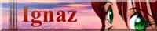

基本的に無断でリンクさせていただいております。筆者は「リンクするのに許可/許諾を求める必要は原則的に無いはず」と考えておりますので、リンク先の方々へ許可は頂いておりません。なぜなら、リンクの際に許可が必要となると、ハイパーリンクを用いた批評・批判が事実上不能となってしまうからです(私が批評・批判をしたいというわけではありませんが)
なお、リンクをする際の連絡を明確に求めるような記述のあるページには元よりリンクしておりません。また、異論があるかもしれませんが、シェアウェアには[MustHave]マークは付けませんので、あしからず。[MustBuy]ってのもおかしいでしょう。
ホットなサイト
- ただいま工事中です
- /2界で最も公共性あふれる「独り言」の筆者 A.UNO さんが、とりあえずキープしてらっしゃるページです。とりあえずリンクだけ先に張らせていただきました。m(__)m
-
- Bad Habits 〜 MINDSCAPE's Homepage
⇔[News][掲示板]!!
- MINDSCAPE こと、橋本 出さんのページです。日本で最も更新頻度の高い Team OS/2 のページ「Team OS/2 八王子/館町では、フリーソフトの更新情報を提供されています。また、掲示板では、その筋の作者達がたくさん集っており、不満不平を言うのに適しています(って、言ってるとこ、見たことないけど ;-)。PC-98上でのOS/2 ソフト稼働調査もされています。
- Rexx使いの卵の page⇔[MustHave]!!!
- REXX使いにして Palm 使いであるところの、織華さんの力と技のページ(←織さんは仮面ライダーぢゃない)。ここまで来ると「Rexx使いの卵」というより「Rexxマスター」ではなかろうか!?PalmPilot用の数々のツールや、REXX、Dr.Dialog を使ったツールを公開されてます。
-
- Ｓｏｆｉｙａの怪しい研究室⇔[掲示板][MustHave]!!
- プラグイン型画像ビューア「水」の作者にして、OS/2界の猫耳愛好家の第一人者 Sofiya さんのページです。PC-88エミュレータM88 for OS/2とか、魅亜ちゃんなど、OS/2 を軟弱化するツールがてんこもりです！Sofiya さんを通じて、魅亜ちゃんにはまった方も数多いのではないでしょうか。え、私？ ふふふ。
-
- _/_/_/_/_/ <NAO> _/_/_/_/_/
⇔
!!
- OS/2 made バナーやアイコンが光ってます＜ＮＡＯ＞さんのページです。「2bytes文字列群」のお話もうなずかされることが多く、ためになるので、OS/2 の話題がなくとも、ついつい読みに行ってしまいます。一部では学校の先生ではという噂が…。
- 零点放射的現実逃避のページ[MustHave]!!
- Delegate、かんな、MH、skkserv の等、UNIX系ツールの移植もされている、上野 博さんのページです。上野さんには、NYAOSかんな化の際に、canna(mt).dllを作っていただいたり、gnspool でのトラブルなどで、たいへんお世話になりました。最近は、日記ページも設置され、読みどころが増えましたが、何か性格が変わられたような…(笑)
- Sava's LUKEWARM POOL[MustHave]!!
- MPGエンコーダ「午後のこ〜だ」の移植や、「水」のプラグインの製作をてがけられているSAVA さんのページです。OS/2 だけでなく、DOS まわり(特に V-TEXT)のノウハウもたくさん記述されています。
- Romy's Page⇔![MustHave]
- 最近、更新頻度が復活してきました品野竜太さんのページです。OS/2 ユーザーへのリンク集としては世界一ぃぃぃぃぃ。なんですが、最近は OS/2 ユーザー自体が増えないせいで、リストの数が増えないぃぃぃぃのが(;_;)。最近、namazu に凝っておられる模様で、ＰＭ用フロントエンドDr.NAMAZUなども作っておられます。
-
- チープでコンパクトな段ボールのお家⇔!![MustHave]
- 夜伽姫なＡＰＭモニターやCD-DA→WAV変換ツール、デバイスドライバーなどを公開されている、夜伽姫/January June/諏訪様のページです。RC-564 Cracking のまとめ役などもされています。最近、ベクター作者ページに引越しされましたので、リンクされている方は張り換えるのを忘れずに。
-
- Altair☆'s Page⇔[MustHave][掲示板]!
- MVDM 、特に Vz をよく使う方には、Musthave ともいえるツールを作られている Altair★ さんのページです。他にも日本のOS/2検索というサーチエンジンや掲示板、UNIXもの(w3m)の移植などもされています。

- Nutshell
- Achain personal web page
(NetLaputa,
Dolphin,
BIG-NET)
⇔[MustHave]
- OS/2 軟弱化計画を推進される、あちゃいんさんのページです。唄って踊れて、絵もプログラミングも出来る多彩な方で、WUUを始めとした Dr.Dialog系ツールもいろいろ公開されています。そして、Web Chain/2はここから始まった！
- FRIES WebPage
- 日記やコラムが充実した FRIES さんのページです。日記は更新頻度が高く、巡回ルートに入れさせていただいてます。用語集も注目株。なんせ、NYAOS の記述もあるから(バキ)。
- Average の Warp On FX00002 な世界
[MustHave]
[New!]
- DDPM の作者にして、はやまの良きアドバイザー(つーか師匠とお呼びすべきか) Average さんのページです。パスカルで作成した様々のプログラムを公開されている他、雑記や製作ノートも楽しいですです。しかし、おそろしきは eef ! WebChain/2 参加しましょうよ〜。

- Kash NET(ちあき さん)
⇔[MustHave]
- 禁煙＆禁Internet Explorerページであるところの、Kash Net のホームページです。かつては、OS/2 ユーザーへのページへのリンク数で有名でしたが、今はもっぱら、TeamVIO の本拠地として、VIOエディターKashEDITや、VIOファイラーJKのホームページとして知られています(よね？)。JavaScript が有効だと読めないのが…ちと、つらいっす。(;_;)
- OS/2 なねた帳ページ
⇔
- Kouhei Nozaki さんのページです。日本版 MustHave 的リンク集とも言えるページがかなり充実していて、国産オンラインソフトの道標としては、かなり有用です。
- 非公式なページ 〜 Project D+OS/2⇔[MustHava]
- いつも、ELLでアドバイスいただいている、静岡大学の岡林利明さんのページです。FILESTAR の 2000年対応新(真?)バージョン「FILENOVA」や、拙作の ELL 用のツール類を公開されています。Project D+OS/2、これからも引き続き応援させていただきますぅぅぅ。
![[banner]](../img/vector.png)
- Vector Software Pack : What's New OS/2,Warp
!!
- ベクターの OS/2 最新ソフトのページへの直接リンクです。とりあえず、ここをいきなり見れば、先週にベクターへ投稿された、OS/2 ソフトを全て見ることができるはずです。
-
- riddle!
⇔
!!!
ページの URL がかわりました
- 坂口 聡さんのriddle!なページです(説明になってない…失礼)。HTML 4.0の規格に完全準拠した、礼儀正しいページです。喫茶 得留津の伝言板や、小説があります。
- TEAM MMOS/2 TOKYO Multimedia Communications!
[MustHave]
- ユーリルミントさんのマルチメディア東京研究室です。OS/2 でマルチメディアを扱うソフトウェアや、そういうソフトを作成するのに役立つ情報が満載です。
- 清水 和佳のページ[MustHave]
- Warp Server Mailing Listの管理をされている清水さんのページです。namazu, mnews, stone などの OS/2 版を公開されています。
- 
- Ignaz homepage
- サークル「イグナーツ」ホームページです。「OS/2Warp軟弱プログラミング１・２」素晴しいです。(@_@)これは入手するしかあるまい。３も早く通販でゲットしなくては…。
- KAMUI's HomePage -ちんたら-
- 開くと音楽がいきなり奏でられるKAMUI さんのページです。The EROtimate OS/2 Gaming Pageが、なんとも…。(^_^)
他に充実したリンクページや Tips ページ、ツーリングの旅行記があります。
- Personal Pages written in JAPANESE by JUN SAWATAISHI
[MustHave]
- pLaTeXとかdvipsなどをUNIX系ソフトウェアの移植をされている強者の方です。最近、OS/2 RPM プロジェクトを開始されました。参加しようと思ったけれども、マニュアル半分読んだだけで頭が飽和に…すみません。
- Kenji Nagasawa Home Page
[MustHave]
- FOS2 で活躍されている KENN さんのページです。ruby(オブジェクト指向スクプト言語)、xtr(テキストファイルフォーマッタ)など、UNIX系のソフトウェアをたくさん移植されています。
-
- J's BIBLE/2 FOS2-ZINE ニッポンの OS/2
!
- @Nifty の FOS2 が WWW へ進出！「勝手にOS/2対応宣言」や「虎の穴」等、その意気ごみは大いに買いですが、もうちょっとブラウザで読み易いページにして欲しいっす。携帯はいいから。
- Team OS/2
{ USA |
日本 |
関西！ |
鹿児島！ |
岡山県人会 |
湘南 |
館町!!! }
- ご存じ、OS/2 最大のユーザー組織 Team OS/2 のページです。USA と 館町以外はほぼ凍ってます。どうして、「Team OS/2」を名乗るページはこうなるのかな。
- ＫＴａｒＯＳ／２の新装半人前ページ
⇔[掲示板]！
- teamos2.narita.org KtarOS/2 他のページ
- 愚痴愚痴掲示板や、Team OS/2 湘南を開設されている、KtarOS/2さんのページです。高齢化の進んでいる(笑)OS/2界にあって、その若きエネルギーが期待されています。
- homy のあれこれそれ[MustHave]
- himage(OS/2 のマルチメディア機能用いろいろ画像フォーマット
ライブラリ) ,
mmconv(OS/2 のマルチメディア機能用マルチメディアコンバータ) ,
JPEG/PNG library ,
zlib ,
Netscape Client ,
SJIS対応 TAR など、
こちらもマルチメディアライブラリがすばらしい。
- 新・ナーガの世界 ver2.5！
- 龍神那伽さんのページです。MASL や 通信関係のシェアウェアが豊富です。
- その男、Ｗａｒｐｅｒにつき・・・
⇔
- wing さんによる、実に Warp なページです。「はやまったぺーじ」を手本にされていると言われてますが、書いてらっしゃる日記の内容は、ワタシよりはるかにレベルが高いっす(葉山文書は、本当に気分のまま書いているだけので…)。
- Hot! Sterm
(Sterm/Super Communication Terminal Support Page.)
[MustHave]
- OS/2の定番通信ソフトといえば、Mashi Suzuki さんのこれですね。他にも Light Editor、縦書きBrowser、シリアルドライバSTCOM.SYS、Mwaveモデム起動プログラムなどを公開されています。
-
- Home Made Page
- HOME MADE PAGE にて、GIFアニメーション作成支援ツールを公開されている金井孝也さんのページです。マイペースで…OS/2 のソフトを作ってくれぇぇぇ(そうじゃないだろ)。
- R.Isobe's Home Page!!
- 磯部隆一郎さんのページです。
TaskSW(タスク切り換えツール)を公開されている他、OS/2 有名ページの更新情報を提供されています。
- Welcome to MinMin's Space![MustHave]
- MinMin さんのページです。
PM123 の歌詞表示プラグインの他、掲示板・チャット・そして、OS/2 ソフトの紹介コーナーを提供されています。ちょっと凍り気味なのが残念。
ちょっと凍結気味なサイト
- OS/2 PAGE⇔
[MustHave]
！
- 大阪大学の金島先生のOS/2のページです。日本のOS/2のオンラインソフトウェアをかなり紹介されてますが、さすがに内容的にかなり古くなってきてます。
- LHA for OS/2 Official Support HOMEPAGE
[MustHave]
- UNIX系フリーソフトウェアの移植を多くてがけられています平松 智さんのページです。LHA for OS/2 の公式サイトです。
- OS/2 宝箱(西尾さん)
⇔
[MustHave]
- Warpに関するリンク集だけかと思いきや、いつのまにやら、ArtDel.zip (象の絵キラー) ,setcrtc.mach64.lzh(XFree86 for OS/2 Ver3.3/Mach64でCP932から立ち上げる) ,OS2CDROM.DMD(どんなCDドライブでもMulti-session/デジタルReadにするドライバ) ,逆Java for OS/2 など、ツールがあります。
- Marchan's homepage
[MustHave]
- INIView(初期化ファイルエディタ),WOR3(ログビューワー&レス書き支援)などを公開されています。
- くらけのホームページ！
[MustHave]⇔
- K-ClockやPicl/2の作者、日下部憲一さんのホームページです。PeekABoo以来、あまり Warp 関係更新されていないのが残念。復活の日は来るか！？ 来てくれぇぇぇ。駄目?
-
- Evatimer for OS/2
[MustHave]
- エヴァ風主電源モニタ。この手のものは、95 だけだろうと思っていたら、なんと、OS/2版もあるのです。いやぁー、OS/2 も軟弱になった。よかったよかった。
- 関西人パワー炸裂!!
⇔
[MustHave]
- Wanderlust や OS/2 MewをPorting されている奥西藤和さんのページです。
- Sukisuki-OS/2 HomePage
- Softbank発行の OS/2 magazine の Mailing Listのホームページです。金島先生のところの NetNews Serverでも読めます。
- /2mag.サポートページ！
- OS/2 magazine の 半official page です。
-
OS/2 World ホームページ
- タイトル通りです。基本的に雑誌紹介のみです。
もっと、他にも内容が欲しいな…。
海の外のサイト
- OS/2 "Must-Have" Utilities And FTP Links
[MustHave]
- OS/2オンラインソフトウェアの甲子園と言われています。もーちっと、画像が少なければ使い勝手がよいのですが…。
- OS/2 Supersite
- ちょっと画像が多すぎて重いけど、その分、内容はかなりボリュームがあります。英語なんで、ちょっとしんどいけど。
記号の意味
| !!! |
毎日〜2,3日くらいで更新 |
| !! |
毎週〜隔週くらいで更新 |
| ！ |
月刊〜きまぐれっぽく更新 |
| (無印) |
未調査、あるいは、普通(どんなだ) |
| ！ |
ほとんど、凍結 |
| [MustHave] |
必須である思われるフリーソフトウェアを公開されています。 |
| [掲示板] |
Web 掲示板があります |
| [News] |
ニュースを提供されています |
▼一般リンクへ
▼扉ページへ